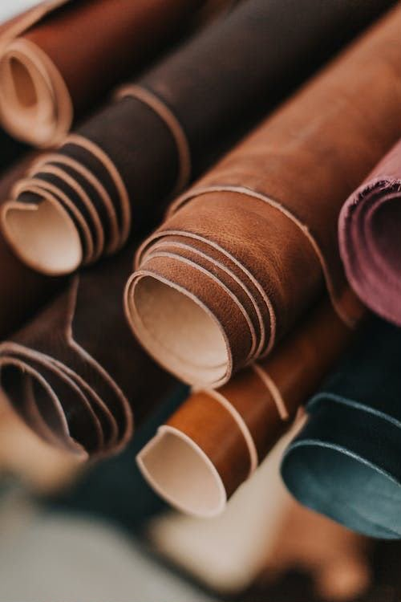
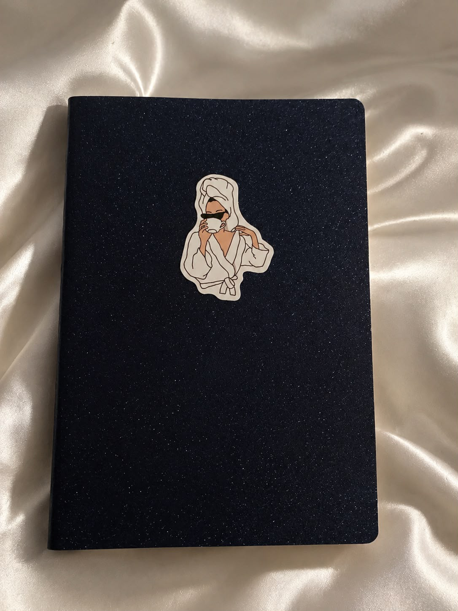
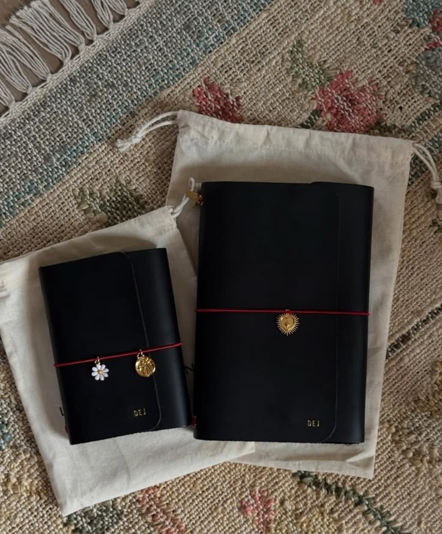

Priori: todo lo que importa merece un lugar
Colección pronta
Modelos ya armados
Combinaciones curadas, listas para pedir. Elegí el que más se parece a vos.
Hecho para vos
Personalizá el tuyo desde cero
Tamaño, color de cuero, elástico, pauta de cada cuaderno, grabado y dijes. Mirá cómo toma forma en el momento.

Cuero & colores
Seis colores de cuero legítimo para una tapa que dura toda la vida.

3 cuadernos & pauta
Armá los tres cuadernos y elegí la pauta de cada uno.
Grabado en el cuero
Tu nombre o una fecha grabada en la tapa.

Tamaño A5 o A6
Del compacto al completo, como vos lo uses.
¿Por qué un journal?
Hay cosas que solo encuentran su lugar cuando las ponemos en el papel.
Escribimos para entender lo que pensamos, guardar lo que vivimos y darle forma a todo aquello que llevamos dentro.
Ideas, planes, preguntas, sueños, recuerdos… algunas cosas nacen en nuestra mente, pero empiezan a cobrar vida cuando decidimos darles espacio.
Un journal no solo guarda lo que ya pasó. También es un lugar para imaginar, crear y empezar a construir todo aquello que todavía está por venir.
Fuimos creados por un Creador. Quizás por eso también llevamos dentro el deseo de crear.